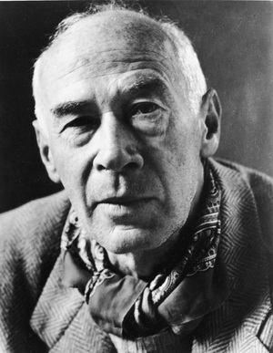

Henry Valentine Miller (26 tháng 12 năm 1891 - ngày 7 tháng 6 năm 1980) là một nhà văn người Mỹ, đã chuyển tới Paris khi ông phát triển đến đỉnh cao nhất của sự nghiệp. Ông được biết đến với việc phá vỡ các hình thức văn học hiện có và phát triển một thể loại mới của tiểu thuyết bán tự truyện trong đó ông pha trộn các nghiên cứu nhân vật, phê bình xã hội, phản ánh triết học, ngôn ngữ tả chân, tình dục, chủ nghĩa siêu thực, và chủ nghĩa thần bí.
Tác phẩm kinh điển của ông về thể loại này là Tropic of Cancer, Black Spring, Tropic of Capricorn và bộ ba truyện The Rosy Crucifixion, với nội dung dựa vào kinh nghiệm sống của ông tại New York và Paris (tất cả đều bị cấm ở Hoa Kỳ cho đến năm 1961). Ông cũng đã viết hồi ký du lịch, phê bình văn học, và vẽ tranh màu nước.

.Henry Valentine Miller.
Mùa Xuân Đen là một cuốn sách gồm mười truyện ngắn của nhà văn người Mỹ Henry Miller, được xuất bản năm 1936 bởi Obelisk Press ở Paris, Pháp. Black Spring là cuốn sách xuất bản thứ hai của Miller, sau Tropic of Cancer và trước Tropic of Capricorn. Cuốn sách được viết vào năm 1932-33 khi Miller đang sống ở Clichy, một vùng ngoại ô phía Tây Bắc của Paris. Giống như Tropic of Cancer, cuốn sách dành riêng cho Anaïs Nin.
"Trong mười năm tôi sống ở Paris, chắc hẳn tôi đã viết được bảy hoặc tám cuốn sách. Cuốn này, Mùa xuân đen, tôi thích nhất trong tất cả những gì tôi viết trong khoảng thời gian đó. Đó là một giai đoạn tuyệt vời của cuộc đời tôi. Những năm 1932 và 33, sống bên ngoài Paris ở thị trấn Clichy, nơi tôi viết cuốn sách, tôi nghĩ là những năm tuyệt vời nhất trong cả cuộc đời tôi."
*
HENRY MILLER đã viết rất nhiều tác phẩm. Tác phẩm này (MÙA XUÂN ĐEN) quan trọng hơn cả.
WEBSTER SCHOTT. Kansas CITY
Nghệ thuật tả thực của MÙA XUÂN ĐEN thật là tuyệt diệu. Là văn, nhưng không khác gì hội họa. HENRY MILLER quả là một tiểu thuyết gia vĩ đại nhất của thế kỷ XX.
MAXWELL GEISMAR
Tác phẩm MÙA XUÂN ĐEN được viết giữahai cuốn HẠ CHÍ TUYẾN (TRO-PIC OF CANCER) và ĐÔNG CHÍ TUYẾN (TROPIC OF CARPICORN) nên đã gồm tóm được tất cả những tư tưởng hàm súc của thế-giới-văn- chương HENRY MILLER.
THE NEW YORKER
Những sách của Henry Miller đầu tiên bị liệt vào loại sách cấm bán ở Mỹ vì tính chất sex... và Anti-America... nhưng dân Mỹ lại khoái xem truyện của Henry Miller vì «hay quá» «It’s a dirty book, that’s worth reading.» Và dân Mỹ đã phải mua «giá chợ đen» các sách của Henry Miller xuất bản ở Pháp do các du khách mang về Mỹ..
VĂN HỌC SỬ HOA KỲ